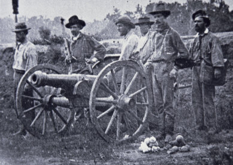
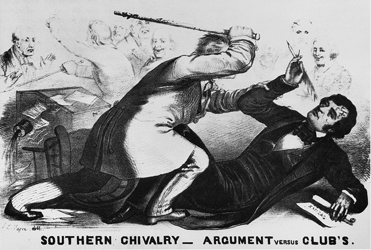
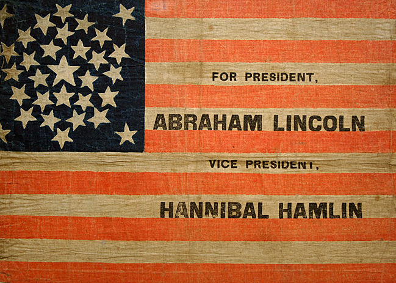
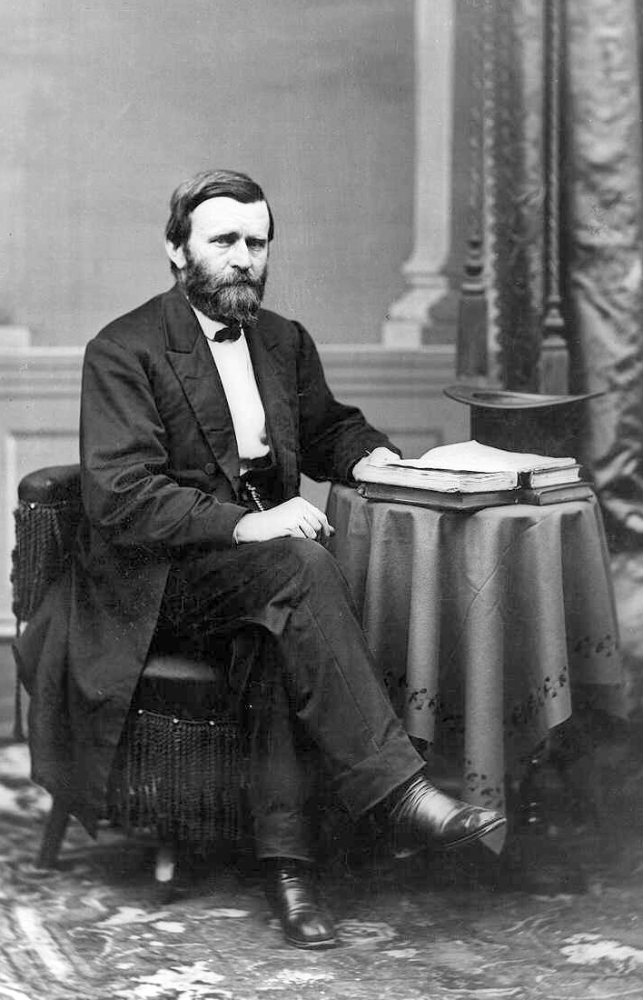

|
The Republican Party was born in the middle of the national
turmoil over the slavery question in the 1850s. Within a few
years of its establishment, the Republicans were one of the
two major political organizations that governed the United
States of America. From 1865 onward, Republicans proudly
described themselves as the party that won the War, restored
the Union, freed the slaves and guaranteed their civil
rights, and brought unparalleled growth and prosperity to
the country. Voters agreed, and by 1876 the Republican Party
had fashioned an electoral dominance over the presidency
that lasted, with only two exceptions, until 1930.
Founding of the Republican Party
The immediate reason for the founding of the Republican
Party was the controversy over the Kansas-Nebraska Act of
1854. The debate over Stephen Douglas' bill set off a
firestorm of protest over the "Nebraska Outrage" throughout
the North in the spring and summer of 1854. Northern anger
over slavery's possible extension into free territories
sought a political outlet, where none currently existed. The
stability of the two party system had been shaken with the
demise of the Whig Party by the mid-1850s. Some Whigs had
joined the Free Soil Party, which was dedicated to halting
the spread of slavery. Meanwhile, the American, or
|

Events in "Bleeding Kansas" proved too
much for the United States' existing party system to handle.
|
Know-Nothing Party, based on anti-immigration sentiment, had
become a major force in politics, winning elections in the
North and even in the South.
Many former Whigs, anti-Nebraska Democrats and Free
Soilers, however, were uncomfortable with joining a
political party based on an anti-immigrant platform, also
known as nativism. As the protests over the Kansas-Nebraska
Act grew louder and larger, many determined to form a new
political party. Most historians agree that the first
official use of the term "Republican" came on February 28,
1854, at a meeting in Ripon, Wisconsin. The name, linking
the new party with the legacy of 1776, quickly gained
widespread acceptance. A great number of Congressmen in
Washington, D.C. formally adopted the name in time for the
1854 fall elections, in which the Democrats' fortunes fell
and the Republicans' rose.
The Republican Party grew rapidly in the North and the
organization swelled with former Know-Nothings and Whigs.
Indeed, the Whig Party provided most of the leaders and much
of the economic program for the new political entity. The
controversy over slavery in the territories continued
unabated, and the Republican cause was helped by the uproar
over the "little civil war" waged in Kansas in 1855 and
1856. In 1856, the Republicans fielded their first
presidential candidate, the western explorer, John C.
Frémont. "Free soil, free labor, free men, Frémont!" was the
rallying cry. "Wide Awake Clubs" formed all across the
Northern states, and huge rallies and parades spread the
Republican message. The pro-Southern Democratic candidate
James Buchanan of Pennsylvania was the election's victor by
a comfortable margin, but the Republicans did very well,
particularly in New England and in Wisconsin, Michigan, and
New York.
The Republicans and Slavery
Republicans articulated and refined their platform in the
four years between 1856 and 1860. Leaders such as William H.
Seward of New York, Salmon P. Chase of Ohio, and Abraham
Lincoln of Illinois broadened the appeal of the Party. The
Republican position on slavery was borrowed almost entirely
from the Free Soil party: The national government should
restrict the spread of slavery into the territories. Most
Republicans pledged to protect slavery where it existed, in
the South, but hoped that restriction would put it on the
path to ultimate extinction. The opposition to slavery
embodied in the Republican program did not stem primarily
from moral concerns, however. Instead, the free soil
argument was focused on creating and maintaining
opportunities for free, white labor. There were some
abolitionists in the Republican ranks who saw slavery as an
evil unto itself, but in general the Party cared more about
preserving and extending rights and opportunities for white
people than it did about bringing freedom and justice to the
nearly four million slaves living in the Southern states.
The anti-slavery message of the Republican Party was tied
to a powerfully appealing program designed to ensure upward
mobility for the ordinary men and women of the country. Free
labor everywhere, according to Party leaders, would
|

The caning of Charles Sumner did much
to win converts for the new Republican Party.
|
guarantee the kind of dynamic capitalism that stimulated
individual initiative and achievement. Republican rule meant
government aid to the economy in the form of tariffs (a tax
on imported goods), loans for transcontinental railroads, a
homestead act, a central bank, and funds for higher
education. This progressive vision would benefit farmers and
urban dwellers alike. In 1862, due to the absence of
Southern Democrats in the national legislature, the
Republican Party enacted into law almost every single one of
its economic proposals. The passage of the Homestead Act,
the Pacific Railroad Act, and the Morrill Act, for example,
laid the foundation for the surging postwar industrial
economy.
The great enemy of economic, moral and political
progress, Republicans claimed, was the backward system of
slavery and its protector, the "Slave Power," which
controlled the Democratic Party, and through it, the
national government. Republicans pointed to the Fugitive
Slave Act, the repeal of the Missouri Compromise, the Kansas
controversy, the caning of Senator Charles Sumner of
Massachusetts and the Dred Scott Decision as proof for their
contention that the liberties and freedom of white Americans
were being seriously threatened.
The Party Claims the Presidency
The election of 1860 brought the presidency to the
Republican Party. Abraham Lincoln, a moderate from Illinois,
captured the nomination over more prominent and experienced,
but also more controversial leaders such as Seward, Chase,
and Edward Bates of Missouri. During the summer of 1860, the
Democratic Party split into northern and southern wings.
Lincoln's main opponent was Democrat Stephen Douglas but
there were two other candidates who ran on a Southern-only
ticket. The Republican platform reiterated their free soil
philosophy, and accused Democrats of being the party of
|

A flag from the 1860 presidential campaign.
|
slavery, disunion, and corruption. When the votes were
counted, Lincoln's substantial majority in the Northern
states gave him the win over the other three candidates.
With Lincoln's victory, a party based wholly on sectional
interest had captured the White House, and the cost was the
Union. Seven Southern states seceded shortly thereafter,
believing that their liberties were threatened seriously by
Lincoln's victory. They quickly established the Confederate
States of America. During the tense months between the end
of Buchanan's administration and Lincoln's March
inauguration, the new president formed a cabinet, tried to
reassure a nervous public, and made several attempts to
bring back the seceded states. All efforts at compromise
foundered on Lincoln's insistence that stopping slavery's
advance into the territories was not an issue that could be
compromised.
Between 1861-1865, the Republican Party was responsible
for waging war against the seceded states, devising plans
for Reconstruction, and attending to the normal chores of
national governance. Led by Lincoln, and pushed by a group
of Radical Republicans led by Sumner and Benjamin Wade in
the Senate and Thaddeus Stevens in the House, the Republican
Party passed the legislation that made the emancipation of
the slaves a reality. Republicans soon divided into factions
representing conservative, moderate, and radical positions
over whether a harsh or lenient reconstruction policy should
be implemented. President Lincoln provided a moderating
voice and struggled to make the Republican Party into a
truly national entity. In 1864 the Republicans were known
briefly as the "National Union Party," and as a gesture to
inclusion, the wartime governor of Tennessee, former
Democrat Andrew Johnson was placed on the ticket with
Lincoln.
The Republicans in the Postwar Era
After the defeat of the Confederacy and Lincoln's
assassination, congressional Republicans battled with
Johnson over the right to control the process of
Reconstruction in the South. The major achievements of the
Party include the Thirteenth, Fourteenth and Fifteenth
Amendments, the so-called "reconstruction amendments" to the
U.S. Constitution, which abolished slavery, established the
criteria for federal and state citizenship and equal
protection under the law, and ruled out race (but not
gender) as a barrier to voting. If addition, Republicans
also passed other Reconstruction and civil rights acts that
set up guidelines for the readmitting the Southern states
back into the Union.
Republicans narrowly missed removing Andrew Johnson from
office in 1868, and in that same year their candidate for
the presidency, Ulysses S. Grant, triumphed at the polls.
President Grant and the Republican Party faced daunting
challenges in putting a Reconstruction policy to work. They
had two goals. The first was to remake the South from a
slave society to a free labor society, as close to the North
as possible. The second was to protect the newly freed
|

President Grant
|
slaves' rights against a hostile white population. To do
this, Republicans had to control the Southern state
governments and to establish a viable two party system in
the South. The Republican coalition of Carpetbaggers,
Scalawags, and African American voters could not withstand
unrelenting and violent Southern white resistance. By the
early 1870s, redemption prevailed, and the South was once
again becoming a solid Democratic Party stronghold
controlled by white Southerners.
As the party was failing to establish a stronghold in the
South, many Republicans were anxious to recast the message
of the party for the future. Called "half-breeds," and led
by the dynamic James G. Blaine of Maine, they looked to
strengthen the economic nationalism of their party with
polices furthering the development of an urban-industrial
economy. Blaine and his supporters argued that most
Americans were tired of hearing about the problems of the
South, and more interested in other issues like the tariff,
or monetary reform. Opposed to Blaine were the stalwarts,
like Roscoe Conkling of New York, who, while supporting
economic advancement, wished to continue to try to make the
South a good place for the Republican Party.
As Grant's administration became mired in scandals and
charges of corruption, a group of disaffected "Liberal
Republicans" called for civil service reform. Typical
practice up to that time had been for presidents to appoint
individuals to government jobs based on their party loyalty
rather than their honesty or competence for the job. The
Liberals wanted to end corruption in government, stop the
"spoils men" from looting the treasury, and put the running
of the government on an efficient and business-like basis.
This movement was led by the Missouri politician Carl
Schurz, and formed an alliance with the Democratic Party in
the election of 1872. Their candidate was the newspaper
publisher Horace Greeley. Although Grant won handily, the
threat to the Republican party was clear. The chilling
effects of the depression of 1873 led to a rise in support
for the Democratic Party. Additionally, Northern voters
turned a deaf ear to pleas from desperate Southern
Republican governments fighting the Ku Klux Klan.
Northerners did not support Grant's use of federal troops to
stop Klan violence, nor were they pleased with the passage
of the Civil Rights Act of 1875. The House fell to Democrats
in 1875, the Senate in 1879, and the presidency in 1884.
The disputed presidential election of 1876, in which Ohio
Republican Rutherford B. Hayes was awarded the election over
the New York Democrat Samuel Tilden, is traditionally
considered the end of Reconstruction. From that point on,
the Republican Party would strive to maintain its majority
status by stressing broad issues of economic advancement and
culturally conservative issues like prohibition appealing to
its protestant, native born base. The freedmen would not
again receive attention from a major party until the 1930s.
Source: Joan Waugh, ed., Facts on File Encyclopedia of American
History: Civil War and Reconstruction, 1856 to 1869 (New York: Facts on
File, 2003), 300-303.
|